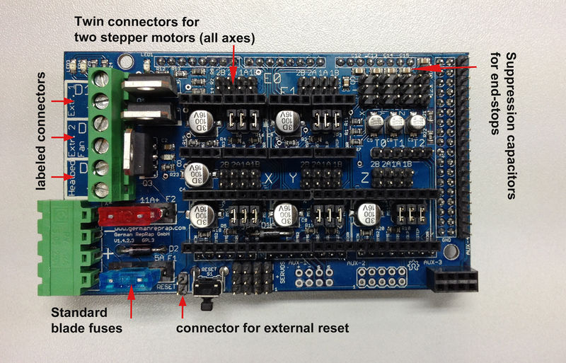
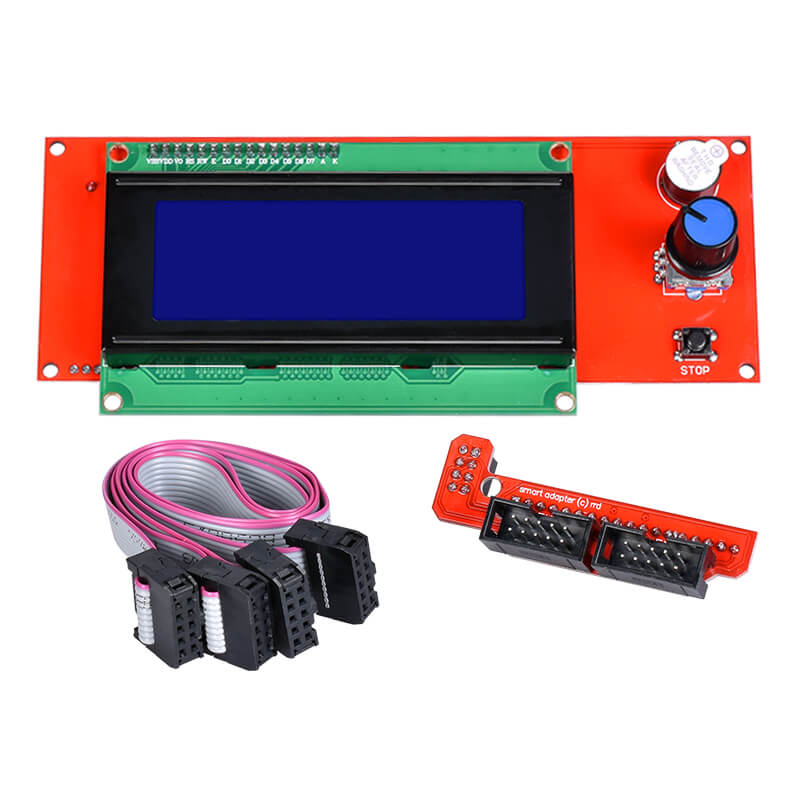

RAMPS 1.5 Marlin LCD-2004 SD card work problem
Проблема
Делаю принтер на Arduino Mega 2560 и Ramps 1.5
Экран RepRapDiscount Smart Controller
Не хочет работать взаимодействие с SD картой.
 
Marlin 2.1.2.1
Configuration.h
#define SDSUPPORT
#define REPRAP_DISCOUNT_SMART_CONTROLLER
Configuration_adv.h
#define SDCARD_CONNECTION LCD //(без него тоже пробовал)
Пробовал играться с #define SD_SPI_SPEED, #define SD_CHECK_AND_RETRY
При вставке карты, на экране: Media Init fail
В меню: No media
В Pronterface при подключении и при извлечении карты: echo:SD card released
Если вставить карту, то: echo:No SD card
Т.е. он в принципе то взаимодействует со считывальщиком карт.
И также понятно, что #define SD_DETECT_STATE выставлен правильно.
Карта точно рабочая, причем с этим же экраном. Но пробовал и другие и форматировать и т.д.
Провода так же точно рабочие.
Раньше было подключено к MKS Base 1.5, там все работало. только что подключил туда перепроверить, там все читается и работает.
Решение
Предположение сначала пало на marlin, что у него в версии 2.1.x что-то переделали в работе с SD картами и с ними куча проблем.
Но дело оказалось в самой arduino.
Попробовал с другой - все заработало.
Причем и с версией 2.0.x и с 2.1.x.